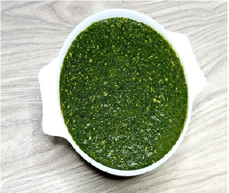
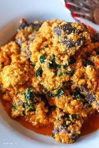
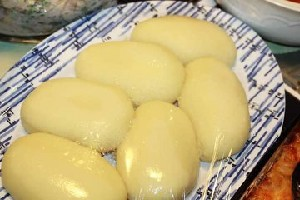
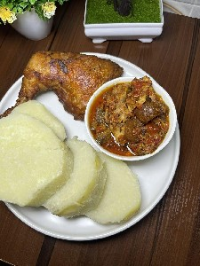
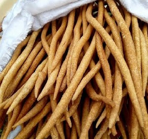
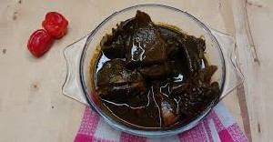

Ata ẹ̀wà
A yoruba stew specifically made for eating beans.
Mo fẹ́ran ata ẹ̀wàI love beans stew
Names of Yorùbá foods and dishes, with tone-marked spellings, IPA transcriptions, example sentences, pictures and native-speaker recordings.
A yoruba stew specifically made for eating beans.
Mo fẹ́ran ata ẹ̀wàI love beans stew

A yoruba stew made for ofada rice.
Mi ò fẹ́ran AyamaṣeI don't like ofada stew
A crunchy, savory, and slightly sweet treat often shaped into small balls or patties. It's name implies 'sweetness'.
mo ra àádùn ní ọjàI bought sweets from the martket

A food made with blended maize.
mo ra Àbàrí jẹ.I bought Àbàrí to eat.

combination of Beans soup and jute(Ewedu).
wọ́n ń ta àbùlà ni ibíthey sell àbùlà here.

A popular Yoruba one-pot porridge dish featuring a mixture of beans and corn.
Àdàlú wùn mí jẹI crave àdàlú

A staple food made with yam peel.
Mo jẹ àmàlà dúdú ni ànái ate black Àmàlà yesterday

Apon soup (Ogbono soup) is a popular Yoruba “draw” soup made from ground African mango seeds. It is thick, nutritious, and known for its slimy texture, similar to okra soup.
Mi ò fẹ́ràn ọbẹ̀ Àpọ̀n gan-an.I don't really like Àpọ̀nSoup.

Asaro is a traditional Yoruba dish made from white yam cooked and mashed in a rich sauce of palm oil, tomatoes, peppers, and onions. It is a thick, savory yam porridge cooked as a one-pot meal.
Àsárò jẹ́ oúnjẹ àtàárọ̀ pàtàkì lọ́jọ́rú ní ilé waAsaro is a Wednesday morning special in my home

A meal prepare from roasted and pepped goat meat.
kílódé tí o fi jẹ àsun?Why did you eat roasted goat meat?

A tasty roasted plantain.
Mo fẹràn láti jẹ bọ̀lì mi pẹ̀lú ẹ̀pà yíyanI prefer to eat my bọ̀lì with roasted groundnuts

Consists of ripe plantains that are fried until they are golden-brown and caramelized.
Ọ̀nà tó dára jùlọ láti jẹ ẹ̀wà àti ìrẹsì ni pẹ̀lú dòdò ti a ti ge sí wẹ́wẹ́The best way to eat beans and rice is with a side of diced dodo

A snack made from overripe plantain.
a ra dòdò Ìkirè ní ojú ọ̀nà wawe bought dòdò ìkirè on our way

Dundun is a popular Nigerian snack made from deep-fried white yam. It is crispy outside, soft inside, and usually eaten with spicy pepper sauce (ata dindin).
A ra dùndun àti ata díndín ní ọjàWe bought dùndún and sauce from the market.

a nutritious, slimy green soup made from cooked and blended jute leaves.
Mo jẹ ọbẹ̀ Ewédú pẹ̀lú ọ̀pọ̀lọpọ̀ ẹranI ate jute leaf soup with a lot of meat

Ebiripo is a traditional Ijebu Remo dish from Ogun State. It is a steamed cocoyam pudding, also eaten as a swallow.
Kò dá bí temi, àwọn ọ̀rẹ́ mi fẹ́ràn ẹbirípọ̀Unlike myself, my friends love Ebiripo

a traditional Yoruba comfort dish from southwestern Nigeria, consisting of a mixture of cooked, broken corn (Egbo) and beans (Ewa).
Arábinrin náà kò ta ẹ̀gbo àti ẹ̀wà mọ̀n-ọ̀nThe woman stop selling Ẹ̀gbo àti ẹ̀wà

A traditional, savory Nigerian dish originating from the Yoruba people in Southwestern Nigeria.
Èkuru jé oúnjẹ abalaye fún àwọn ÌbejìÈkuru is an ancestral food for twins

a specie of yam commonly eaten in Nigeria and known for its medicinal properties in treating diabetes.
Ọbẹ̀ ata ni a fí n jẹ Èsúrú.Bitter yam is eaten with pepper sauce.

A cooked starchy food made from casava flakes with hot water, eaten with soup.
ríi dájú pé o tẹ ẹ̀bà pẹ̀lú ọbẹ̀ ẹ̀gúsí lónìíMake sure you prepare ẹ̀bà with ẹ̀gúsí soup today

A soup made out of melon seed.
Mo fẹ́ràn ẹ̀gúsíI love Ẹ̀gúsí

Eko is a smooth cornmeal pudding made from cooked maize or cornflour. It is a firm, jelly-like food usually eaten with soups, stews, or with milk and sugar.
Ní òwúrọ̀, mo maa n jẹ Ẹ̀kọ.For breakfast, I usually eat Ẹ̀kọ.

Popular food consisting of very soft mashed beans served with spicy, dark red-black palm oil and pepper sauce.
Mo fẹràn láti jẹ ẹ̀wà àgọ̀yìn mi pẹ̀lú búrẹ́dì rírọ̀I prefer to eat my ẹ̀wà àgọ̀yìn with soft bread

A starchy food made with cassava.
màá jẹ fùfú ní ọ̀laI will east fùfú tomorrow

a traditional medicinal dark soup from Ondo State, Nigeria, renowned as a colon cleanser or detoxifier.
Kílódé tí o fi fẹ́ràn ọbẹ̀ gbánúnùWhy do you love white butterfly soup so much?

traditional, savory Nigerian soup originating from the Yoruba people, made by boiling, peeling, and blending beans—typically black-eyed or brown peas—into a smooth, thick paste.
ọbẹ̀ gbẹ̀gìrì jẹ́ ọbẹ̀ kìkiGbẹ̀gìrì is a thick soup

a popular, savoury western Nigerian soup, made from chopped or blended okra, known for its slimy texture, flavoured with palm oil, and different kinds of protein.
Ọbẹ̀ ilá náà yọ̀ púpọ̀The okra soup is very slimy

Isu is the Yoruba word for yam, a starchy root vegetable that is a major staple food in Nigeria and West Africa.
Isu pẹ̀lú ẹyin jẹ́ àjọṣe tí Ọlọ́run dáYam with eggs is a match made in heaven
A starch food made by pounding/blending boiled yam.
Mo gún iyán ní èníI prepared pounded yam today

Ikokore is a traditional dish from the Ijebu people of Ogun State. It is a rich and savory water yam pottage, known for its hearty and slightly slimy texture.
Mi ò tíì jẹ Ìkọ́kọrẹ́ fún àkókò pípẹ́I haven't eaten Ìkọ́kọrẹ́ in a ,long time

a traditional Yoruba soup, made from okra leaves, originating from Igbo-Ora in Oyo State.
Ó ra Ọbẹ̀ Ìlasà ni ọ̀dọ̀ olóúnjẹShe bought okra leaf soup from the food vendor

Imoyo is a traditional Yoruba (Anago) fish stew that is thin and savory. It is made with fresh fish, tomatoes, peppers, onions, palm oil, and locust beans, and is usually served with rice, eko, or yam.
Ìyá-ìyá mi se Ìmóyò pẹlu ẹja tútù ati ìrẹsìMy grandmother prepared Ìmóyò with fresh fish and rice.

Crunchy, deep-fried snacks made from thinly sliced unripe or ripe plantains.
Èló ni ìkpékeré yín?How much is your ìkpékeré?

A yam dish cooked down with vegetables and oil into a dense meal.
Ìyá àgbà mi kọ́ mi bí a ṣe ń ṣe oúnjẹ ìpẹ̀tẹ̀ tó yẹMy grandmother taught me how to make a proper ìpẹ̀tẹ̀ dish
a traditional delicacy from Western Nigeria, made from white hibiscus flower and typically thickened with Egusi (melon seeds).
Ọbẹ̀ ìṣápá ni wọ́n sè fún ìnáwó náàThe Hibiscus flower soup was cooked for the ceremony.

a steamed pudding made primarily from melon seeds and beans.
Jógí mélòó ló kù nínu ìkòkò?How many melon and beans pudding is left in the pot?

A popular, nutritious, and savory street food made from peeled and ground beans (typically black-eyed peas) mixed with onions, peppers, and seasonings made with palm oil.
kéńgbé rèé o.This is kéńgbé. 06/Feb/2026

A snack made from fried maize pudding.
Ìyá mi dín kókóróMy mum prepares Fried Maize pudding

A traditional Yoruba staple food made from processed, dried cassava flour.
Àmàlà Láfún wà láti ẹ́yá ẹ̀gbáÀmàlà Láfún is from the Ẹ̀gbá tribe

A Yoruba soup made from black seed leaves.
mo ní márúgbó síléI have black leaves soup at home
Moin moin is a popular Nigerian dish made from steamed blended beans. It is a nutritious, protein-rich pudding from southwestern Nigeria.
Mọ́ínmọ́ín jẹ́ èròjà óúnjẹ tó dáa tí a fi ẹ̀wà ṣe.Mọ́ínmọ́ín is a healthy food made from beans.

A traditional fermented cereal pudding or porridge, widely known as pap or akamu in other parts of Nigeria.
Ní gbogbo òwúrọ̀ ọjọ́ ẹtì, òórùn ògì gbígbóná àti àkàrà didin máà n kún ilé waEvery Saturday morning, the aroma of hot ògì and fried àkàrà fills our home

A starchy food made with cassava.
màá jẹ fùfú ní ọ̀laI will east fùfú tomorrow

A popular Yoruba snack or finger food made from grated water yam.
ọ̀jọ̀jọ̀ jẹ́ oúnjẹ yorùbá pọ́nbéléọ̀jọ̀jọ̀ is a typical yoruba food

a traditional delicacy made from dehydrated ground okra, which can be flavoured with palm oil, assorted meat, fish and cow skin.
Wọ́n n ta ọbẹ̀ ọ̀rúnlá.They sell Dehydrated Okra soup

A traditional snack made from boiled, dried corn (or fresh sweet corn) mixed with grated coconut.
Ẹ jẹ́ ká fí ọ̀wọ̀wọ̀ diẹ ṣe ipanu ọ̀sánLet's have some ọ̀wọ̀wọ̀ for an afternoon snack

Pupuru is a traditional cassava flour food from Ondo State. It is fermented and smoked, giving it a light texture and smoky taste, and is eaten as a 'swallow' with soups.
Púpurú tí mo rà láti Ìpínlẹ̀ Ondo dùn gidi gan.The púpurú I bought from Ondo state is very delicious

A popular, nutritious, and savory street food made from peeled and ground beans (typically black-eyed peas) mixed with onions, peppers, and seasonings Made with vegetables oil.
sẹ̀ẹ̀kẹ́ dùn-ùn ju kengbe lọsẹ̀ẹ̀kẹ́ is sweeter than kengbe

a soup popular in western Nigeria, prepared with Bologi leaf leaves, palm oil, peppers, onions, locust beans, and proteins like dry fish or smoked fish.
Ọbẹ̀ wọ̀rọ̀wọ́ máa ń dùn.Bologi leaf vegetable soup always tastes good.
No entries match your search.
Transcription, annotation, translation and editing by a Yorùbá linguist.